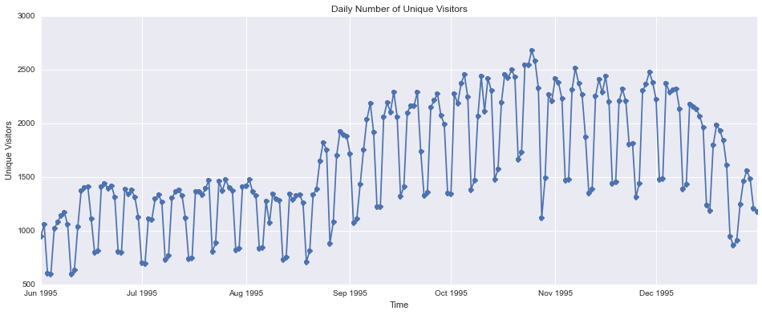

Web server log file analysis using Spark
Apache Spark is an open source big data processing framework built around speed and ease of use. Because of its speed and scalability Spark is well suited for processing a large collection of log files, from a web server, for example.
For this example I am going to use a dataset freely available from The Internet Traffic Archive. I will be using the Saskatchewan-HTTP trace. This trace contains seven month’s worth of all HTTP requests to the University of Saskatchewan’s WWW server. The University of Saskatchewan is located in Saskatoon, Saskatchewan, Canada.
RDD - Resilient Distributed Datasets
An RDD in Spark is simply an immutable distributed collection of objects. They are immutable in the sense that you can modify an RDD with a transformation that results in a new RDD whilst keeping the original RDD intact. Immutability guarantees consistency. More about RDDs can be found from this paper.
#Read the raw log file(s)
rawLogsRDD = sc.textFile('/home/tony/Desktop/usask_access_log.gz')
rawLogsRDD.first()
u'202.32.92.47 - - [01/Jun/1995:00:00:59 -0600] "GET /~scottp/publish.html" 200 271'
The logs are an ASCII file with one line per request, with the following columns:
- host making the request
- timestamp
- request
- HTTP reply code
- bytes in the reply The first log was collected from 00:00:00 June 1, 1995 through 23:59:59 December 31, 1995, a total of 214 days
# Use regular expression to extract fields from the log entries
import re
parsedLogsRDD = rawLogsRDD.map(lambda log: (map(''.join, re.findall(r'\"(.*?)\"|\[(.*?)\]|(\S+)', log))))
parsedLogsRDD.first()
[u'202.32.92.47', u'-', u'-', u'01/Jun/1995:00:00:59 -0600', u'GET /~scottp/publish.html', u'200', u'271']
import datetime
month_to_num_mapping = {'Jan': 1, 'Feb': 2, 'Mar':3,
'Apr':4, 'May':5, 'Jun':6,
'Jul':7,'Aug':8, 'Sep': 9,
'Oct':10, 'Nov': 11, 'Dec': 12}
def parse_time(s):
return datetime.datetime(int(s[7:11]), month_to_num_mapping[s[3:6]],
int(s[0:2]), int(s[12:14]), int(s[15:17]),int(s[18:20]))
#filter invalid request codes, end points, non-numeric byte values, etc
def filterBytes(s):
try:
return int(s)
except ValueError:
return 0
_Temp_logsRDD = parsedLogsRDD.map(lambda log: (log[0], log[3], log[4], log[5], log[6]))\
.filter(lambda log: len(log[1])==26)\
.filter(lambda log: log[2][0].isalpha())\
.map(lambda log: (log[0], parse_time(log[1]), log[2].split(" "), log[3], log[4]))
Temp_logsRDD = _Temp_logsRDD.filter(lambda log: len(log[2])>1).map(lambda log: (log[0], log[1], log[2][0], log[2][1], log[3], filterBytes(log[4])))
Temp_logsRDD.saveAsPickleFile('/home/tony/Desktop/apache.RDD')
# Noticed improved performance by saving the RDD to disk at this stage and reading from file later as we won't be doing the filter transformations above each time
# Create final RDD and cache it
logsRDD = (sc.pickleFile('/home/tony/Desktop/apache.RDD/*')).cache()
# How many entries in the RDD
logsRDD.count()
2408584
# Lets have a look at the first entry
logsRDD.first()
(u'202.32.92.47', datetime.datetime(1995, 6, 1, 0, 0, 59), u'GET', u'/~scottp/publish.html', u'200', 271)
Now that we have the final RDD, and cached, we are ready for some analysis
- Content size statistics
- Response code statistics and graphing
- Frequent hosts
- Unique hosts
- Visualising endpoinds
- Top Error endpoinds
The list goes on. We are going to perform a few here for illustration
from __future__ import division
vol = logsRDD.map(lambda x: int(x[5])).sum()/(1024*1024*1024)
entries = logsRDD.count()
print "Total traffic = %fGB from %d log entries" % (vol, entries)
Total traffic = 12.054965GB from 2408584 log entries
Unique hosts
# Total number of unique hosts
logsRDD.map(lambda x: x[0]).distinct().count()
162513
logsRDD.map(lambda x: x[0]).distinct().takeSample(True, 10)
[u'filler17.peak.org', u'molbiol3.icgeb.trieste.it', u'lsh.smedia.com.sg', u'128.184.60.7', u'pc9.bmgt.tue.nl', u'deneb.engin.umich.edu', u'host056.airnet.net', u'205.222.5.65', u'dialup09.av.ca.qnet.com', u'fastcard.earthlink.net']
Top Hosts by Traffic Volume
logsRDD.map(lambda x: (x[0], x[5]))\
.reduceByKey(lambda a,b: a+b)\
.sortBy(lambda a: -a[1]).take(10)
[(u'freenet.buffalo.edu', 305054357), (u'duke.usask.ca', 274868959), (u'broadway.sfn.saskatoon.sk.ca', 135494706), (u'ccn.cs.dal.ca', 115300828), (u'srv1.freenet.calgary.ab.ca', 111177588), (u'sask.usask.ca', 101352832), (u'sailor.lib.md.us', 82896472), (u'www.gnofn.org', 80557148), (u'sendit.sendit.nodak.edu', 74408851), (u'huey.usask.ca', 63100477)]
Some visualisation
daily_unique_visitors = logsRDD.map(lambda log: (log[1].date(), log[0]))\
.distinct().groupByKey()\
.map(lambda x: (x[0], len(x[1]))).collectAsMap()
import matplotlib.pyplot as plt
import seaborn as sns
import pandas as pd
df = pd.DataFrame.from_dict(daily_unique_visitors, orient="index")
df.plot(style='o-', title='Daily Number of Unique Visitors', legend=False, figsize=(16, 6))
plt.xlabel('Time')
plt.ylabel('Unique Visitors')

Most popular resources
logsRDD.map(lambda log: (log[3], 1))\
.reduceByKey(lambda a,b: a+b)\
.sortBy(lambda a: -a[1]).take(10)
[(u'/', 200484), (u'/images/logo.gif', 141702), (u'/~scottp/free.html', 78705), (u'/images/logo_32.gif', 44826), (u'/cgi-bin/hytelnet', 32599), (u'/images/letter_32.gif', 23940), (u'/images/question_32.gif', 23714), (u'/~scottp/freetel.html', 22931), (u'/~scottp/free.html/', 22201), (u'/~scottp/fn1.gif', 21067)]
We can see the enormous Spark potential just from the few examples above.